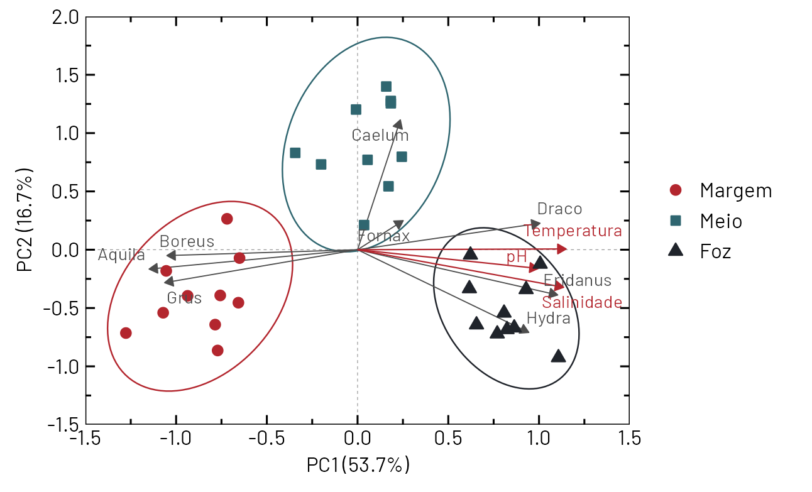
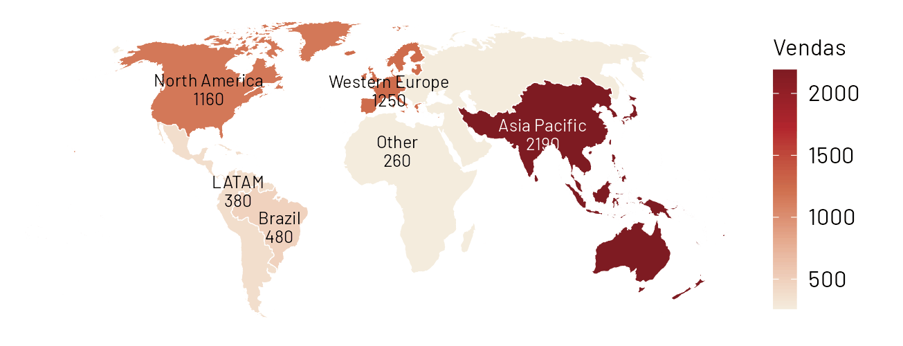

Um painel de uma página que reúne os gráficos, os resumos estatísticos e os destaques do seu trabalho: você monta na tela e sai em PDF.
Cada gráfico sai separado (PNG, PDF, SVG). Para apresentar, é preciso montar tudo no PowerPoint ou no Word, copiar os números dos testes e escrever os destaques à mão.
Um botão reúne os gráficos das suas abas, os resumos estatísticos e destaques escritos a partir dos números. Você arruma na tela (arrastar, esticar, trocar de lugar) e baixa um PDF ou um HTML para compartilhar com o time.
O botão abre o editor numa tela cheia (como o "Maximizar"). O gráfico e as abas continuam como estão; o dashboard só lê o que já foi feito e pode ser refeito a qualquer momento.


Mock da tela de edição (as imagens são gráficos reais do Cinabro). Esquerda: biblioteca de blocos e os gráficos das suas abas (arraste para a folha). Centro: a folha, em escala, com grade pontilhada, guias de alinhamento (tracejado azul) e o bloco selecionado com alças. Direita: propriedades do bloco.
Os gráficos entram em alta resolução (PNG a 300 dpi; no HTML podem entrar como SVG vetorial). A fonte e as cores são as do Cinabro.
Qualquer gráfico das abas (inclusive PCA, mapas, mapa de calor). Mostra o que está na aba: se você mudar a aba, o bloco se atualiza.
Um número grande com legenda (total, maior região, % explicada, p). Escolhe-se a origem (um resumo ou uma fórmula simples) ou se digita.
Frases geradas dos números (veja a seção 7). Cada frase pode ser editada, apagada ou reordenada; dá para somar as suas.
A caixa de resumo que já existe (equação e R², % dos eixos, testes) como bloco próprio, com tamanho de letra livre.
Estatística descritiva, resultado do ANOVA/Tukey, autovalores do PCA: as tabelas de "Tabelas e testes" prontas, com zebra e cabeçalho.
Títulos, comentários, notas metodológicas, o logotipo da empresa. Texto com negrito, itálico, expoente e índice (como nos gráficos).
| Origem | Regra | Exemplo de frase |
|---|---|---|
| Mapa / barras | Maior e menor valor; participação do maior no total; concentração (top 3) | "A Ásia-Pacífico concentra 40% das vendas; as três maiores regiões somam 87%." |
| Linhas (série) | Variação entre o primeiro e o último ponto; inclinação da reta de ajuste; máximo e quando ocorreu | "A temperatura da Amostra A subiu 62% em 60 min (R² = 0,97)." |
| PCA / CA / CCA | % dos dois eixos; variáveis que mais pesam; p do teste; ambientais significativas | "PC1 + PC2 explicam 70,4%; Draco e Hydra pesam mais no eixo 1; salinidade é a ambiental mais ligada (R² = 0,93, p < 0,001)." |
| Grupos (boxplot) | ANOVA/Kruskal; maior média; diferenças pelo Tukey/Holm | "Os grupos diferem (Kruskal-Wallis, p = 0,003); a Dose 3 tem a maior mediana." |
| Mapa de calor | Maior e menor célula; linha/coluna de maior média | "O maior valor está em Gene 09 × Controle (17,3)." |
| Ação | Como |
|---|---|
| Mover | Arrastar o bloco. Guias tracejadas aparecem ao alinhar com as bordas e o centro de outros blocos; imã na grade (liga/desliga). |
| Redimensionar | Alças nos 4 cantos e 4 lados (as mesmas do Cinabro). Shift mantém a proporção; o gráfico dentro se reajusta ao novo tamanho. |
| Trocar de lugar | Arrastar um bloco sobre outro troca os dois (opcional). |
| Alinhar e distribuir | Selecionar vários (Shift/Ctrl, ou laço) e usar alinhar à esquerda/centro/direita/topo/meio/base e "distribuir igualmente". |
| Ordem (frente/trás) | Botão no painel da direita; os blocos nunca "somem" atrás de outros sem aviso. |
| Duplicar, apagar, travar | Ctrl+D, Del, "Travar posição". |
| Setas do teclado | Ajuste fino (2 px; com Shift, 10 px) — igual ao que já existe nas caixas do gráfico. |
| Desfazer / refazer | Ctrl+Z / Ctrl+Y, com histórico da sessão. |
| Zoom | Ctrl + roda do mouse; "ajustar à tela". |
| Modelos | Disposições prontas ("Resumo executivo", "Artigo: figura de 4 painéis", "Apresentação 16:9"). Você também salva o seu como modelo para o time. |
.cinabro)app_shiny/www/dashboard.html), preenchido pelo motor.Pronto quando: você monta, ajusta e baixa um PDF de 1 página com 4 gráficos em menos de 5 minutos.
Pronto quando: o time reaproveita um modelo com dados novos e o painel sai com os destaques certos.
Pronto quando: o painel HTML responde ao filtro sem o Cinabro aberto.
| Pergunta | Minha sugestão |
|---|---|
| Formato de página principal? | A4 paisagem (e retrato como alternativa). Slide 16:9 na etapa 2. |
| O dashboard deve reunir todas as abas ou só as que você escolher? | Escolher na hora (caixas de marcar), todas marcadas por padrão. |
| Os destaques automáticos devem vir ligados? | Sim, como rascunho editável com o ícone "gerado"; fácil de apagar. |
| PDF: vetorial (nítido, arquivo maior) ou imagem (leve)? | Vetorial por padrão; opção "leve" para e-mail. |
| O painel precisa abrir sem o Cinabro (HTML autônomo)? | Sim: a etapa 1 já entrega isso. |
| Marca da empresa no cabeçalho (logotipo, cores)? | Sim: campo de logotipo e paleta da empresa; se você me passar o logotipo e as cores, entram como tema. |
| Quem edita: só você, ou o time inteiro compartilha modelos? | Modelos como arquivos que o time troca (sem servidor), igual ao .cinabro. |
| Risco | Como tratamos |
|---|---|
| PDF diferente do que se vê na tela | O PDF é gerado a partir da mesma página do editor (mesmo HTML e fonte), e há teste visual automático. |
| Computador sem Edge/Chrome utilizável | Alternativa embutida: abrir a janela de impressão do navegador padrão ("Salvar como PDF"). |
| Destaque automático errado ou "forçado" | Só frases de cálculos que o programa já faz e valida; toda frase editável; nada de interpretação causal. |
| Painel desatualizado quando os dados mudam | Etapa 2: botão "Atualizar" mantém o layout e troca só o conteúdo; aviso quando o bloco está defasado. |
| Tela cheia de coisas ("poluição") | Disposição inicial limpa, poucas cores, 1 mensagem por bloco, margens e espaçamento fixos (o mesmo rigor da auditoria estética). |